The evidence trail, kept visible.
Callosum is a local-first workspace for finding, reading, checking, synthesizing, and citing research. This tour follows real screens through that workflow. Where a feature produces a signal or candidate, the interface keeps the source and the human decision close by.
Start with the corpus you control.
The library is the shared substrate. Import from common formats and supported tools, fetch rights-holder-authorized open copies, organize by research axis, then open the source without crossing into another app.

A library that remembers the question
Research axes remain visible beside the corpus, while the workspace menu connects the library to manuscripts, methods, discovery, status, and usage.

The PDF and its evidence tools share a screen
Search, zoom, annotate, and move among paper lenses without losing the document or its remembered position.
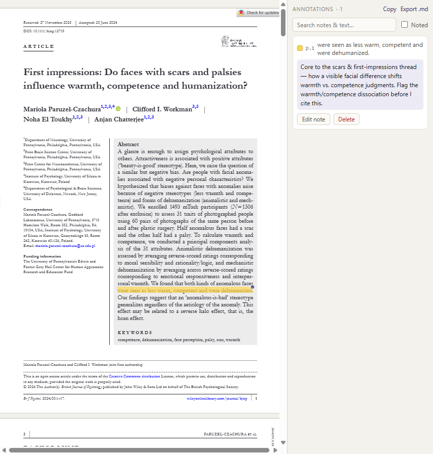
Save the thought with its source
Highlights and notes remain searchable and attached to the paper they came from.
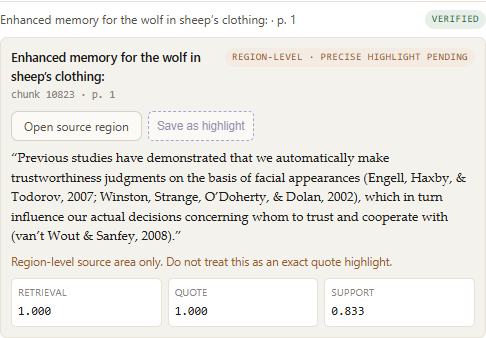
Quote, page, coordinate quality
Evidence cards expose what supports a claim and how precisely it was located.
Let a model draft. Make the substrate answer back.
Generated prose is useful only when the evidence remains cheap to inspect. Callosum checks each sentence locally, preserves the supporting passage, and separates a draft from what the source can actually sustain.

Sentence-level claims, independently checked
Each generated sentence can be opened to its quote, page, stance, and confidence. Contrasts and contradictions stay visible instead of being smoothed into a fluent paragraph.

Commitments and publication evidence, side by side
Registration references are extracted locally, candidates are confirmed explicitly, acquired versions are immutable, and the crosswalk records provenance. It becomes stale when its source evidence changes.
Metadata discovery, registration acquisition, and publication retrieval are separate steps. Callosum shows the identifiers and evidence involved before building the comparison.
Descriptive checks with hard limits.
Methods tools recompute or surface patterns; they do not infer intent. Results retain candidates, inputs, warnings, and review state so a signal can lead back to the reported evidence.

GRIM, GRIMMER, DEBIT, and repeated values
Checks are grouped by what they can establish. The repeated-values scan is explicitly labeled a neutral heuristic, not evidence of misconduct.
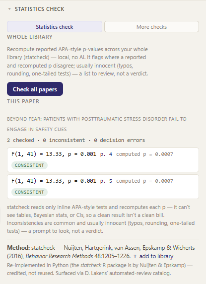
Keep the reported test beside the recomputation
Text and table candidates can be saved per paper, reviewed, and revisited from a manuscript checkpoint.
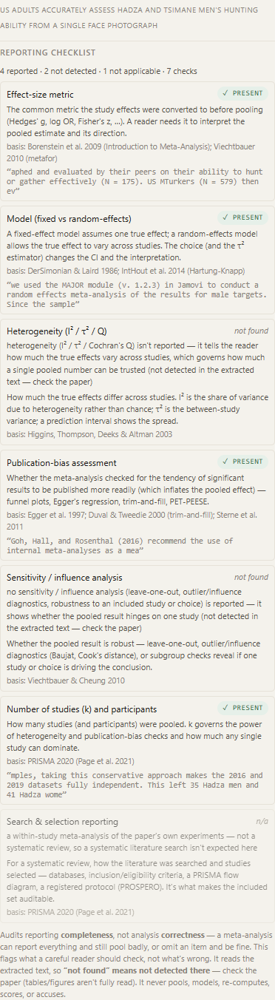
AI proposes cells; the reviewer verifies them
The extraction grid distinguishes candidates from accepted values and preserves the route back to the PDF.
p-curve and z-curve show uncertainty and sample-size limits; z-curve carries a hard warning below 300 tests. Retractions and corrections are records to inspect, not labels to apply to people.
Look beyond the library without hiding the queue.
Feeds, followed authors, My Publications, and beyond-library suggestions use public bibliographic metadata. Ranking can help order attention, but every result remains available and provenance stays visible.
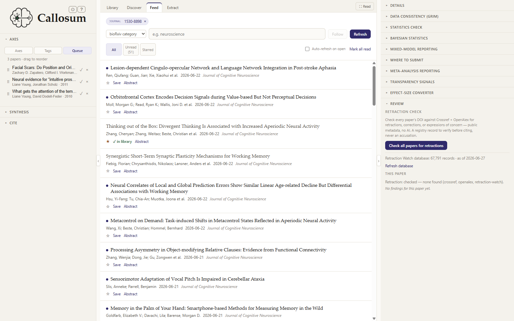
New work arrives as a reviewable queue
Follow journal issues, preprint categories, keyword searches, and authors. Relevance assistance can rank the list; it never silently removes an item.
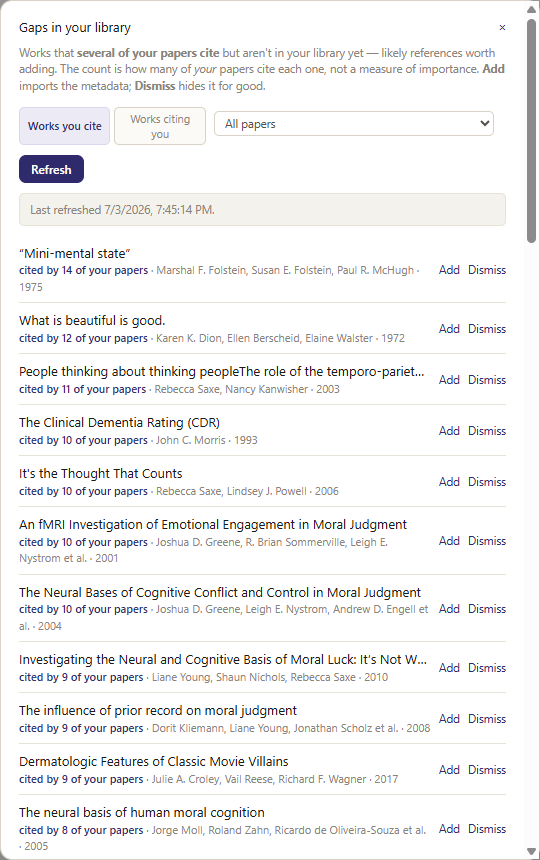
See what is indexed but not local
Missing works become an explicit review and import decision.
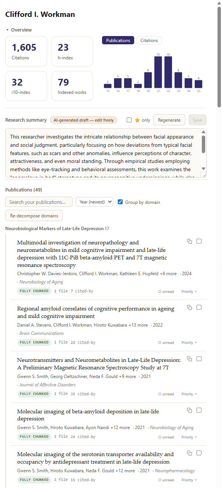
Your work in its research context
Review impact by domain, emerging topics, and the authors citing your publications.
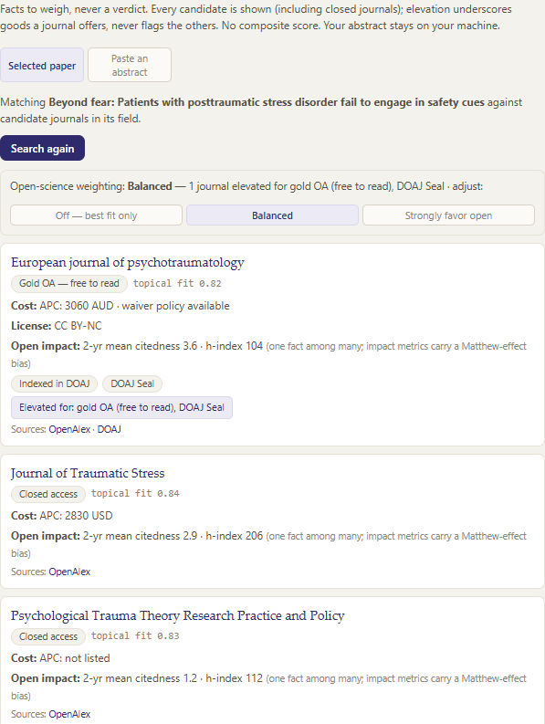
Make the source of a journal signal visible
Directory and policy provenance—from sources such as SciELO, TOP, AJOL, and MEDLINE—remains auditable.
A manuscript is a workspace, not just a filename.
Watched roots connect the current draft to exact snapshots, tool receipts, findings, reference exploration, contribution statements, and the word processor where the prose lives.

Keep each active manuscript in view
Watched roots become project cards with a primary document, checkpoints, exact snapshots, and routes into review tools.
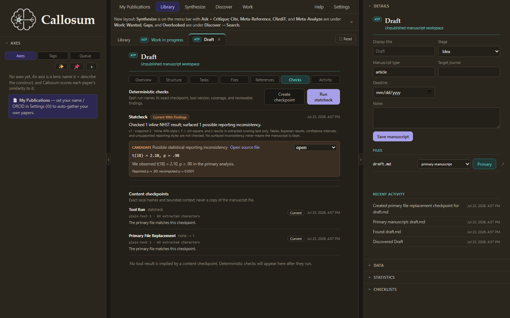
Checks attach to the draft they inspected
Tool runs and findings retain their checkpoint, inputs, and review status instead of floating free of manuscript history.

Explore the citation neighborhood deliberately
Use the manuscript and its references to find adjacent work, with discovery provenance preserved for review.

Format what the team explicitly asserts
Build funding and CRediT contributor statements from structured inputs. Callosum does not decide who did what.
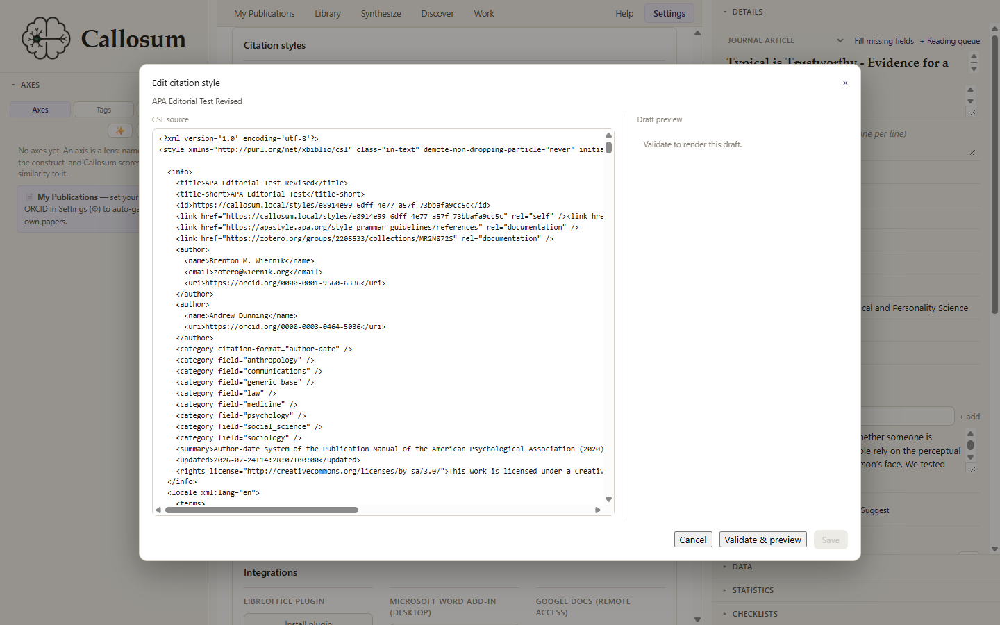
Manage the citation style without leaving the workflow
Install, inspect, edit, update, and switch styles; citation rendering remains local.
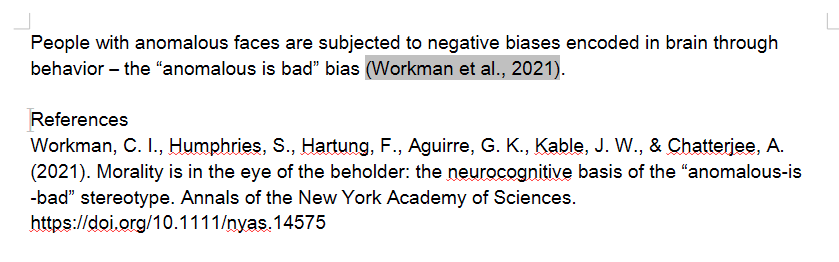
Insert evidence and citations into the document
The Writer integration supports transactional refresh, bibliography navigation, footnotes and endnotes, disclosure statements, integrity preflight, and evidence-aware suggestions.
Long work should never disappear into a spinner.
Global status receipts, honest progress, explicit destinations, and local usage records make background work inspectable. Integrations and egress controls are visible in the same system.

Every long operation leaves a receipt
Progress is based on real work when it can be measured, with timing, outcome, and a click-through destination. Completed work remains reviewable.

See which doors are connected
LibreOffice, Word, and Google Docs integration state appears beside local usage information and feedback controls.
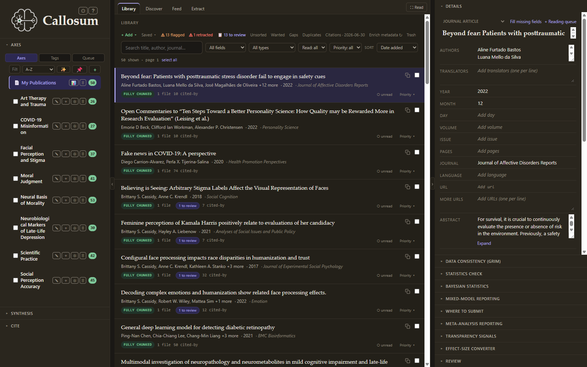
The same quiet hierarchy after dark
The reading surface, navigation, dialogs, and evidence states share a coordinated dark theme.
Run Callosum on your own machine.
Pre-1.0, open source, and single-user-focused. Installers are unsigned; the source and first-launch instructions are public.